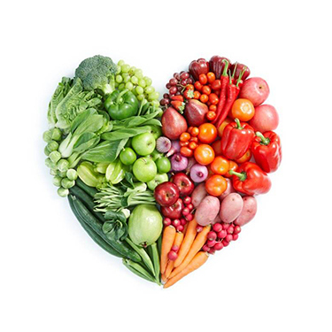
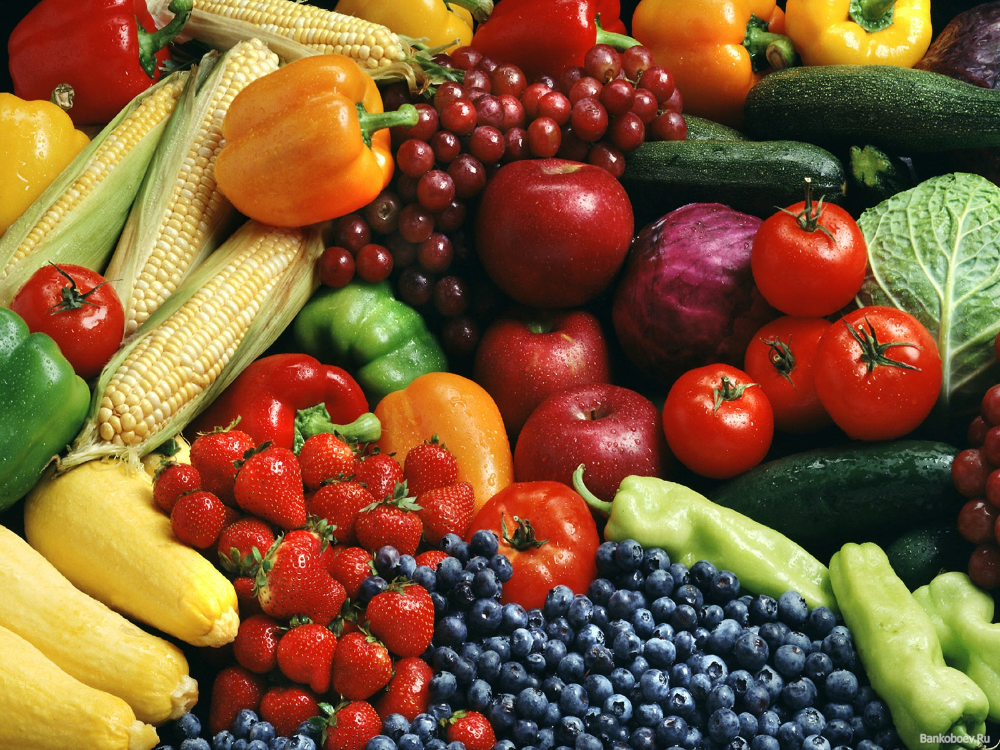

Уголок здорового питания |

Полезные продукты питания:
|
Немного питания |
Дополнительная информация |
||
К настоящим видам ягод относятся:
|
|
||||
|
Ученые утверждают, что клубника позволяет повысить настроение. Кроме того, она способствует бодрости. Ученые рекомендуют съесть 150 гр. клубники для того, чтобы снять стресс. Ягоды содержат 50 ароматических веществ, которые нейтрализуют отрицательные эмоции. |
Чипсы, как кукурузные, так и картофельные – очень вредны для организма. Чипсы – это не что иное, как смесь углеводов и жира, в оболочке красителей и заменителей вкуса. Так же ничего хорошего не принесет поедание картофеля – фри. |
Огромная польза фруктов заключается в их способности предотвращать болезни и поддерживать отменное здоровье в течение долгих лет жизни. Они являются ценным источником витаминов, клетчатки и минеральных веществ, таких как антиоксиданты – бета -каротин (витамина А) и витамин С, которые, защищают клетки от старения и болезней. |
Издревле (примерно до начала земледелия) ягоды были ценнейшим пищевым продуктом и таковым остаются по сей день. Ягодные плоды являлись главной сезонной едой для охотников-собирателей. Даже сейчас сбор ягод считается достаточно популярным занятием среди жителей Европы и Северной Америки. |
При какой температуре хранить ягоды? Наиболее оптимальной считается температура от минус восемнадцати и до минус двадцати градусов. Если температурный режим будет выставлен на минус пятнадцать градусов, то ягоды можно хранить не больше шести месяцев. При температуре минус двенадцать градусов плоды останутся пригодными в пищу в течение трех месяцев. |
|
Дополнительная информация |
|||||